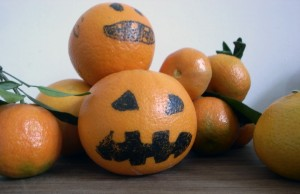

Halloween en valencia
¡Aquí tenemos más naranjas que calabazas!
Halloween in Valencia
Here we have more oranges than pumkins.
Halloween in Valencia.
Hier haben wir mehr Orangen als Kürbisse.



Spinnennetz: Spinnennetz aus Papier zu Halloween. Telaraña hecho de papel para Halloween. Spider web: Spider web made of paper for Halloween. Seen at: omiyageblogs
Weiterlesen →
Erste Vorbereitungen zu Halloween. Ein Spinnennetz inklusive Spinne als gruseligen Kopfschmuck. Die Diagonalen dieses Spinnennetzes sind aus weißem Kabel. Der Knoten des Drahtes und des Garns…
Weiterlesen →
Ein weißes Hemd geschnitten wie ein Spinnennetz. Una camisa blanca cortado como una telaraña. A white shirt cut like a spider web.
Weiterlesen →
Este murciélago se mueve tirando el cuerpo hacia abajo. Las alas tienen un corte para pasar la cuerda. Hace falata mover las cuerdas hasta el ratón…
Weiterlesen →
Hemos puesto en practica la idea maravillosa de Marisol (pinta la lluna) . We have implemented the wonderful idea by Marisol (pinta la lluna) . Wir…
Weiterlesen →
De alambre hemos hecho un mango para un bote de cristal y con papel crepé negro hemos hecho un murciélago.Terminada tenemos una pequeña farolita para Halloween.…
Weiterlesen →